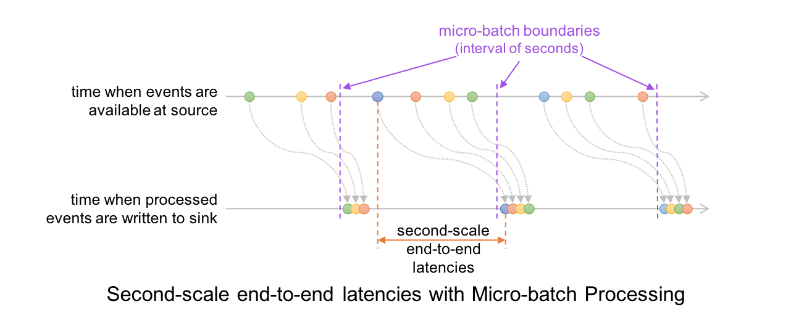

Spark Structured Streaming 分流或双写多表 / 多数据源（Multi Sinks / Writes）
在 Spark Structured Streaming 中，我们有时候需要将最后的处理结果分流或双写到多张表或多个数据源（Multi Sinks / Writes），一个典型的例子是：在 CDC 数据入湖场景里，一个 Kafka Topic 上存放着整库或多张表的 CDC 消息，使用 Spark 从 Kafka 中摄取这些消息后，需要根据消息中提供的数据库名和数据表名对 CDC 消息分流，然后写到数据湖上对应的 ODS 表中，这就是一种典型的“数据分流”场景。在 Spark Structured Streaming 中，实现多表 / 多数据源的分流或双写主要依赖 foreachBatch 和 foreach 这两个方法，本文就围绕它们介绍一下分流或双写多表 / 多数据源的具体实现。
首先，要明确 foreach 和 foreachBatch 都是 action ，也就意味着使用它们时已经到了流的末端，绝大数情况下，就是要将记录写入目标数据源了，这也是 foreach 和 foreachBatch 这两个方法绝大多数的应用场景。通常，在 Spark 中将数据写入一个数据源是这样做的（以写 parquet 文件为例）：
1 | writeStream |
由于 Spark 内置了 parquet 格式的 data writer, 所以我们只需填写一些相应的配置，就可以直接把 DF 按对应的格式写到目标位置了，那什么情况下我们要使用 foreach 和 foreachBatch 呢？下面展开来介绍一下。
1. foreachBatch 的应用场景
大多数情况下，一条的流处理的 pipeline 都是从一个 Source 开始，中间经历各种处理后，最终写入了一个 Sink，但是，在某些场景下，我们流的重点可能需要写入的并不是一个 Sink，而是多个，典型的情形有：
-
数据分流：需要将数据“分流”写入不同的数据源或数据表（ 简单说就是 dispatch ）
-
数据多写：需要同时向多个下游数据源相同相同数据（ 简单说就是 duplicate ）
虽然我们可以非常“粗暴”地通过 for 循环构建多个 writer 实现上述两种典型的写入需求，但是这种做法会让每一个 sink 变成独立的 streaming query （作业），是代价很高的应对方法，并不实用，关于这种情况有这样一个细致的示例： Multiple queries running in Apache Spark Structured Streaming ，最好的做法就是通过 foreachBatch 来实现，实际上上面两种需求正是 foreachBatch 的典型应用场景。我们看一下 foreachBatch 的接口声明：
1 | def foreachBatch(function: (Dataset[T], Long) ⇒ Unit): DataStreamWriter[T] |
我们需要为 foreachBatch 传入一个函数字面量，它有两参数，第一个对应一个 micro-batch 的 DataFrame, 第二个是这个 micro-batch 的 ID，拿到 micro-batch 的 DataFrame 后，我们可以在这个 DataFrame 上作相应的转换处理，最后调用现成的 writer 写入目标端。这里涉及到 Spark Streaming 的 Micro-Batch，也就是上述参数列表中的 Dataset[T] 类型的那个 DataFrame ，关于 Micro-Batch 在流上运行方式，下图给出了非常形象的描绘：

简单地说， Micro-Batch 模式下需要收集齐一定量（或一小段时间范围内）的数据，整理成一个 DataFrame 去处理，它的延迟是在秒级。上图下方时间轴上的每一小撮数据就是 foreachBatch 中传入的那个 DataFrame。
这里，我们特别澄清一个容易误解的地方： foreachBatch 是没有“循环”语义的，这里的 foreach 其实是意在针对每一个 micro-batch 的，不是空间维度上迭代多个 micro-batch, 而是时间维度上针对每一个流经的 micro-batch 进行处理。这里也能提现从 source 构建出的 DF 和这个方法里的 micro-batch 的 DF 的差异，前者是一个无界的 DF，本质上是一个流，更加“实体”的 DF 其实是 foreachBatch 中的这个 DF，它是较短时间内聚齐的“一小撮”数据，边界是确定的！
下面，我们针对分流和双写两种典型场景给出详细的示例代码。
1.1. 通过 foreachBatch 实现数据“分流”
我们以向两种不同的 Hudi 表写入数据为例，先将数据过滤，得到分流后的 DF，然后向对应的 Hudi 表中写入：
1 | streamingDF.writeStream.foreachBatch { (batchDF: DataFrame, batchId: Long) => |
1.2. 通过 foreachBatch 实现数据“双写”
我们以向两种不同的数据源写入数据为例，可以调用多次 write 操作，但是，由于每次写入都会导致数据被 recomputed ，流本身可能不再存在或状态发生了改变，所以,必须要在写入前使用 persist ， 保证向下游多次写入的数据是完全一样，最后记得再执行一遍 unpersist 即可。
1 | streamingDF.writeStream.foreachBatch { (batchDF: DataFrame, batchId: Long) => |
2. foreach 的应用场景
foreachBatch 很实用，但是在如下两种场景下无法工作的：
-
没有现成的支持目标数据源的 data writer；
-
当前流运行于 continuous processing 模式，不支持 micro-batch
如果是上述情形，我们就得使用 foreach 了，因为 foreach 要自行实现对目标数据源的链接和读写，同时，它的自定义处理逻辑又是作用到每一行上的，所以它能解决上述两种场景的问题。某种程度上， foreach 相比 foreachBatch 是一种更底层的 API 。使用 foreach 需要提供一个 ForeachWriter ，实现 open , process , 和 close 三个方法，不过要注意的是这三个方案的调用时机是不同的，open / close 显然是 per-partition 要调用一次的， proess 则是要针对每条记录进行处理的。以下是 一个自行实现 foreach 的代码模板：
1 | streamingDatasetOfString.writeStream.foreach( |
关于 foreach 更多信息可以参考官方文档，这里就不再深究了，大多数情况，我们更多使用的还是 foreachBatch 。
3. 小结
foreach 和 foreachBatch 都能在向目标数据源写入数据时实现定制化的逻辑，它们之间的差别在于：
-
foreachBatch多应用于数据分流或双写场景，目标数据源往往是已经有线程的 data writer 了 -
foreach则要自行实现对目标数据的连接和读写处理 -
两者操纵数据的颗粒度不同，
foreach对数据的梳理逻辑（process 方法）作用到 DF 中的每一行上，而foreachBatch则直接操纵的是每一个 micro-batch 对应的 DF。
参考资料
Spark Structured Streaming 分流或双写多表 / 多数据源（Multi Sinks / Writes）
https://laurence.enlightgram.com/spark/structured-streaming-multi-sinks/